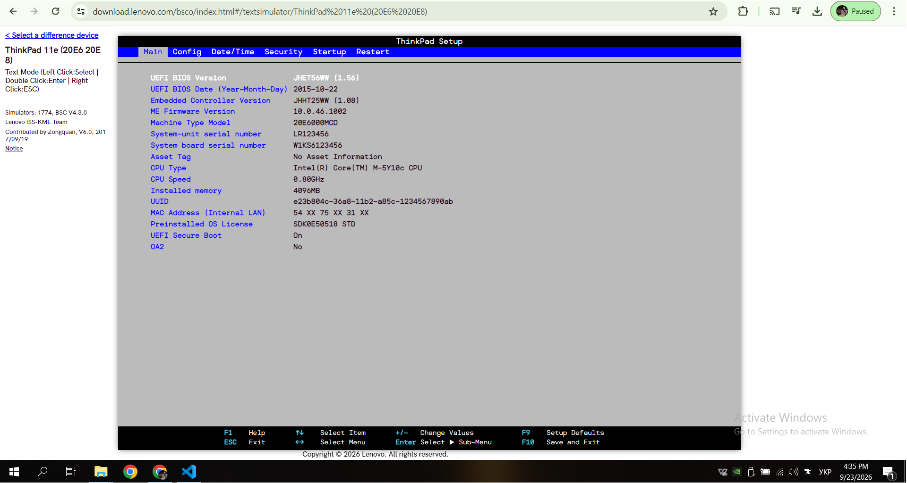
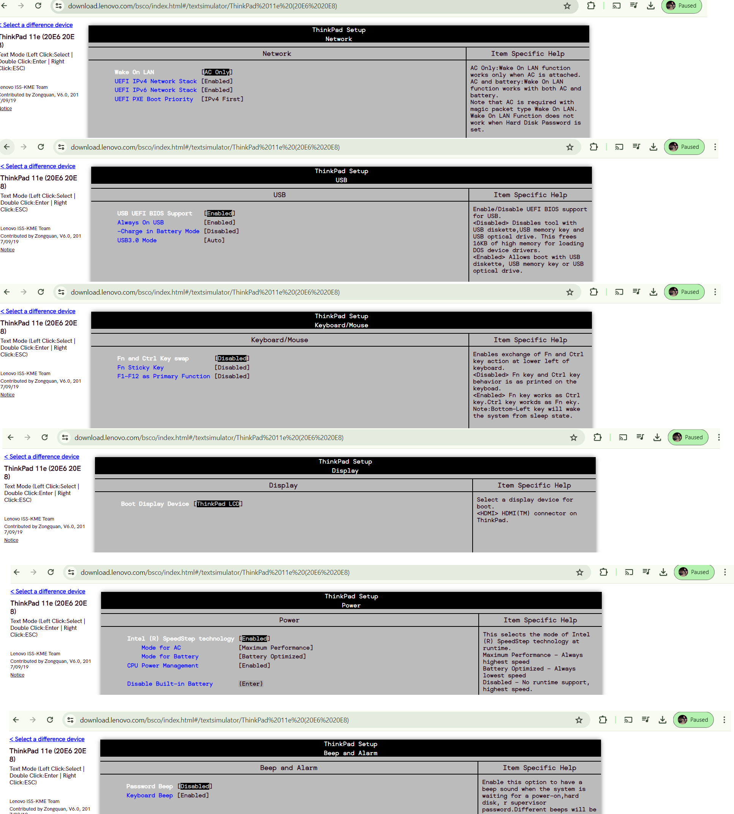
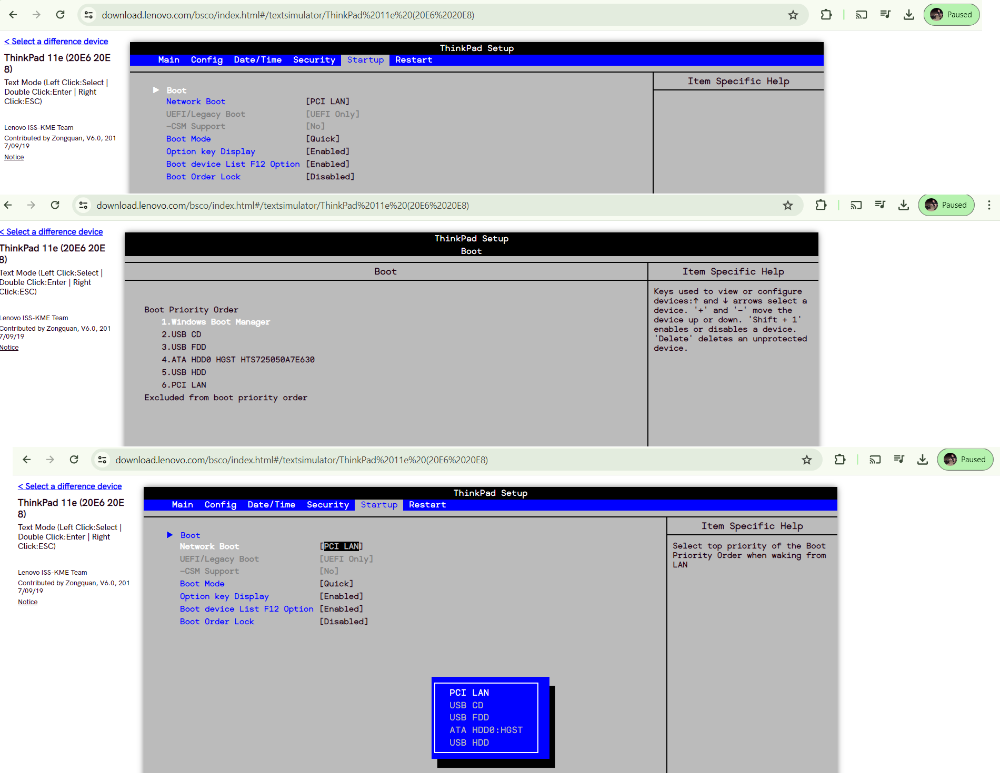
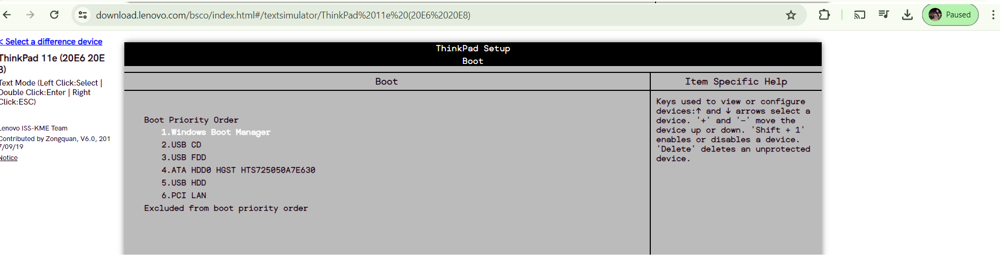
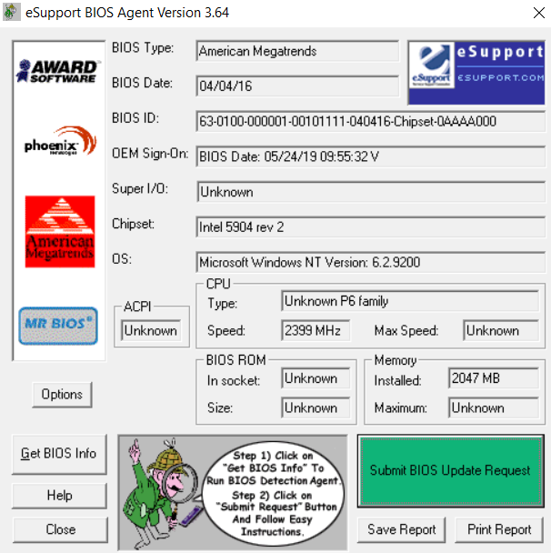
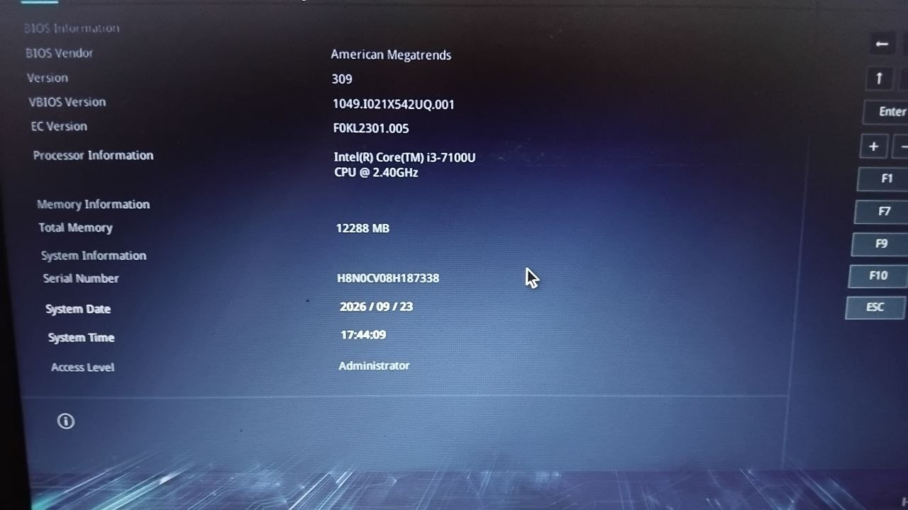

1. Основні налаштування BIOS CMOS (меню Main)
Було запущено програму-емулятор BIOS (ThinkPad Setup).
У меню Main відображаються основні відомості про систему.Я довго не шукав,відкрив перший файл який запропонував нам симулятор у розділі (ThinkPad 11e (20E6 20E8))
Посилання на сайт де я знайшов симулятор

Основні параметри меню Main:
-
UEFI BIOS Version — JHET56WW (1.56)
Версія прошивки BIOS. Показує, яка саме версія BIOS встановлена на материнській платі.
-
UEFI BIOS Date — 2015-10-22
Дата випуску цієї версії BIOS. Дозволяє зрозуміти, наскільки актуальна прошивка.
-
CPU Type — Intel(R) Core(TM) M-5Y10c CPU
Модель процесора, який встановлений у системі.
-
CPU Speed — 0.800 GHz
Поточна тактова частота процесора (у цьому випадку процесор працює в режимі енергозбереження).
-
Installed memory — 4096 MB
Обсяг оперативної пам’яті (ОЗП), встановленої в комп’ютері (4 ГБ).
-
Machine Type Model — 20E600MCD
Модель ноутбука (ThinkPad 11e).
-
UEFI Secure Boot — On
Стан функції захищеного завантаження. Коли увімкнено — система дозволяє завантажувати лише підписані операційні системи.
-
System-unit serial number — LR123456
Серійний номер самого ноутбука (системного блоку).
-
System board serial number — W1KS6123456
Серійний номер материнської плати.
Меню Main містить переважно інформацію про версію BIOS, процесор, обсяг пам’яті та серійні номери системи. Більшість параметрів доступні лише для перегляду.
2. Меню Config (Advanced) + у нашому випадку POWER знаходиться в цьому розділі

Network
- Wake On LAN [AC Only] — дозволяє вмикати ноутбук по мережі. Працює тільки від мережевого адаптера.
- UEFI IPv4 Network Stack [Enabled] — підтримка мережевого стеку IPv4 у середовищі UEFI.
- UEFI IPv6 Network Stack [Enabled] — підтримка мережевого стеку IPv6 у середовищі UEFI.
- UEFI PXE Boot Priority [IPv4 First] — пріоритет завантаження по мережі (спочатку IPv4).
USB
- USB UEFI BIOS Support [Enabled] — дозволяє завантажуватися з USB-пристроїв у режимі UEFI.
- Always On USB [Enabled] — USB-порти залишаються активними навіть у вимкненому стані (для заряджання пристроїв).
- Charge in Battery Mode [Disabled] — забороняє заряджання пристроїв від батареї, коли ноутбук вимкнений.
- USB3.0 Mode [Auto] — автоматичний вибір режиму роботи USB 3.0.
Keyboard/Mouse
- Fn and Ctrl Key swap [Disabled] — міняє місцями клавіші Fn і Ctrl.
- Fn Sticky Key [Disabled] — робить клавішу Fn «липкою» (не потрібно тримати).
- F1-F12 as Primary Function [Disabled] — робить функціональні клавіші F1–F12 основними (без Fn).
Display
- Boot Display Device [ThinkPad LCD] — вибір дисплея, на якому буде показуватися процес завантаження (вбудований екран ноутбука).
Power
- Intel (R) SpeedStep technology [Enabled] — технологія динамічної зміни частоти процесора для економії енергії.
- Mode for AC [Maximum Performance] — максимальна продуктивність від мережі.
- Mode for Battery [Battery Optimized] — оптимізований режим від батареї.
- CPU Power Management [Enabled] — керування живленням процесора.
- Disable Built-in Battery — можливість програмно вимкнути вбудовану батарею.
Beep and Alarm
- Password Beep [Disabled] — звуковий сигнал при введенні пароля.
- Keyboard Beep [Enabled] — звуковий сигнал при натисканні клавіш.
3. Меню Startup (Boot)

Network Boot [PCI LAN]
Вибір пристрою для завантаження по мережі (PXE). Зараз встановлено PCI LAN.
UEFI/Legacy Boot [UEFI Only]
Режим завантаження. Встановлено тільки UEFI (без підтримки Legacy BIOS).
CSM Support [No]
Compatibility Support Module — підтримка завантаження старих операційних систем у режимі Legacy. Вимкнено.
Boot Mode [Quick]
Швидкий режим завантаження (пропускає частину перевірок POST для прискорення старту системи).
Option key Display [Enabled]
Показує підказки щодо гарячих клавіш під час завантаження (наприклад, F1, F12).
Boot device List F12 Option [Enabled]
Дозволяє викликати меню вибору завантажувального пристрою клавішею F12.
Boot Order Lock [Disabled]
Блокування зміни порядку завантаження. Зараз вимкнено (можна змінювати).
Boot (Boot Priority Order)

Порядок завантаження пристроїв:
- Windows Boot Manager — менеджер завантаження Windows
- USB CD — завантаження з USB-оптичного приводу
- USB FDD — завантаження з USB-дисковода
- ATA HDD0 HGST HTS725050A7E630 — основний жорсткий диск
- USB HDD — завантаження з USB-накопичувача
- PCI LAN — завантаження по мережі
3. Інформація з eSupport BIOS Agent (Get Bios Info)

Було запущено програму eSupport BIOS Agent. Після натискання
кнопки Get Bios Info програма виконала перевірку BIOS
та основних апаратних характеристик комп'ютера.
Отримана інформація дозволяє визначити версію BIOS, дату його створення,
тип чипсета, характеристики процесора, обсяг оперативної пам'яті
та деякі інші параметри системи.
Отримана інформація та її пояснення:
-
BIOS Type — American Megatrends
Тип BIOS, який використовується в комп'ютері. American Megatrends — один із розробників BIOS та прошивок для материнських плат.
-
BIOS Date — 04/04/2016
Дата створення або версії BIOS, яку визначила програма.
-
BIOS ID — 63-0100-000001-00101111-040416-Chipset-0AAAA000
Унікальний ідентифікаційний рядок BIOS, який використовується для визначення версії та характеристик прошивки.
-
OEM Sign-On — BIOS Date: 05/24/19 09:55:32 V
Додаткова інформація виробника або OEM, записана у BIOS.
-
Super I/O — Unknown
Мікросхема, яка відповідає за роботу деяких пристроїв, портів, вентиляторів та датчиків. Програма не визначила її модель.
-
Chipset — Intel 5904 rev 2
Чипсет забезпечує взаємодію процесора, оперативної пам'яті та інших компонентів комп'ютера.
-
OS — Microsoft Windows NT Version: 6.2.9200
Версія операційної системи, яку визначила програма. Значення 6.2.9200 відповідає Windows 8.
-
ACPI — Unknown
Стандарт керування живленням та апаратними пристроями комп'ютера. Версію визначити не вдалося.
-
CPU Type — Unknown P6 family
Тип процесора, визначений програмою. P6 family — сімейство процесорів, до якого програма віднесла CPU.
-
CPU Speed — 2399 MHz
Тактовa частота процесора. 2399 MHz — приблизно 2,4 GHz.
-
Max Speed — Unknown
Максимальну тактову частоту процесора програма не визначила.
-
BIOS ROM In socket — Unknown
Інформація про розташування мікросхеми BIOS ROM. Програма не визначила, чи встановлена вона в окремому сокеті.
-
BIOS ROM Size — Unknown
Обсяг пам'яті, який займає мікросхема BIOS. Значення не визначено.
-
Installed Memory — 2047 MB
Обсяг встановленої оперативної пам'яті. Програма визначила приблизно 2047 MB, тобто близько 2 GB.
-
Maximum Memory — Unknown
Максимальний обсяг оперативної пам'яті, який підтримує система. Програма не змогла його визначити.
4. Дослідження та опис звукових кодів BIOS власного ПК
На особистому ноутбуці було досліджено BIOS American Megatrends Version 309
(ASUS X542U).
Характеристика BIOS:
- BIOS Vendor — American Megatrends
- Version — 309
- VBIOS Version — 1049.I021X542UQ.001
- EC Version — F0KL2301.005
- Процесор — Intel Core i3-7100U @ 2.40 GHz
- ОЗП — 12288 МБ
- Серійний номер — H8N0CV08H187338

Оскільки виробник не надає окремої документації зі звуковими кодами саме для Version 309,
використано офіційні коди American Megatrends з документа
«AMIBIOS8 Checkpoint & Beep Code List» Version 2.0 Ось посилання пдф файла ,яке я знайшов на офііцйному сайті,Звукові сигнали знаходяться на останній сторінці..
POST BIOS Beep Codes:
- 1 сигнал — Memory refresh timer error (помилка таймера оновлення пам’яті)
- 3 сигнали — Base memory read/write test error (помилка читання/запису базової пам’яті)
- 6 сигналів — Keyboard controller BAT command failed (помилка контролера клавіатури)
- 7 сигналів — General exception error (загальна помилка процесора)
- 8 сигналів — Display memory error (помилка відеопам’яті / відеоадаптера)
Рекомендації з усунення несправностей:
- Коди 1 і 3 — перевстановити або замінити модулі оперативної пам’яті
- Коди 6 і 7 — серйозна помилка системи (перевірити клавіатуру, процесор, материнську плату)
- Код 8 — проблема з відеосистемою (інтегрована графіка або дисплей)
Примітка щодо джерела звукових кодів:
Виробник ноутбука (ASUS) та American Megatrends не публікують окрему таблицю звукових кодів
саме для BIOS Version 309. У відкритому доступі відсутня офіційна документація з beep-кодами
для цієї конкретної версії прошивки тому я використав стандартні бумаги за 2008 рік.
Висновок
У ході виконання лабораторної роботи було досліджено основні налаштування BIOS
на прикладі емулятора ThinkPad Setup та особистого ноутбука ASUS з BIOS
American Megatrends Version 309.
Проаналізовано меню Main, Config (Advanced), Startup (Boot) та отримано детальну
інформацію про апаратну частину за допомогою eSupport BIOS Agent.
Також досліджено звукові коди BIOS. Оскільки для версії 309 окремої офіційної
таблиці beep-кодів немає, використано стандартні коди American Megatrends
(AMIBIOS8 Checkpoint & Beep Code List, 2008).
Завдяки цій лабораторній роботі я закріпив практичні навички роботи з BIOS/UEFI, та порозумів
основні параметри системи та методи діагностики апаратних несправностей
за допомогою звукових сигналів.